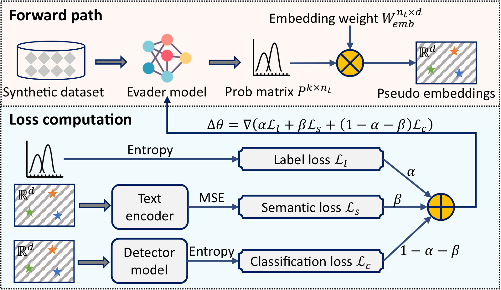

GradEscape: A Gradient-Based Evader Against AI-Generated Text Detectors
USENIX Security 2025

Abstract
In this paper, we introduce GradEscape, the first gradient-based evader designed to attack AI-generated text (AIGT) detectors. GradEscape overcomes the undifferentiable computation problem, caused by the discrete nature of text, by introducing a novel approach to construct weighted embeddings for the detector input. It then updates the evader model parameters using feedback from victim detectors, achieving high attack success with minimal text modification. To address the issue of tokenizer mismatch between the evader and the detector, we introduce a warm-started evader method, enabling GradEscape to adapt to detectors across any language model architecture. Moreover, we employ novel tokenizer inference and model extraction techniques, facilitating effective evasion even in query-only access. We evaluate GradEscape on four datasets and three widely-used language models, benchmarking it against four state-of-the-art AIGT evaders. Experimental results demonstrate that GradEscape outperforms existing evaders in various scenarios, including with an 11B paraphrase model, while utilizing only 139M parameters. We have successfully applied GradEscape to two real-world commercial AIGT detectors. Our analysis reveals that the primary vulnerability stems from disparity in text expression styles within the training data. We also propose a potential defense strategy to mitigate the threat of AIGT evaders. We open-source our GradEscape for developing more robust AIGT detectors.
Resources
Citation
@inproceedings{MFWCLZZC25,
author = {Wenlong Meng and Shuguo Fan and Chengkun Wei and Min Chen and Yuwei Li and Yuanchao Zhang and Zhikun Zhang and Wenzhi Chen},
title = {{GradEscape: A Gradient-Based Evader Against AI-Generated Text Detectors}},
booktitle = {{USENIX Security}},
publisher = {USENIX Association},
year = {2025},
}